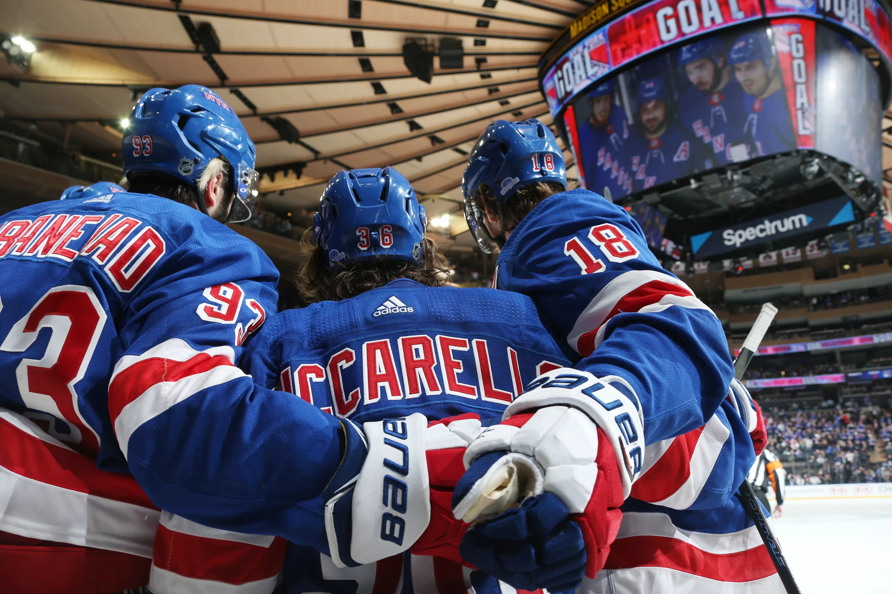

Homepage

State of the New York Rangers in Early August
The New York Rangers have had a very quiet offseason, unlike their neighbors in Brooklyn/Long Island. They have made no signings,
despite reportedly being in the race for Ilya Kovalchuk's services. They resigned some core pieces in Vladislav Namestikov and Kevin Hayes.

I am projecting the Rangers to be eighth in the Metropolitan Division and last in the league. However, it will be interesting to watch rookie head coach
David Quinn's first year in the NHL. I am also predicting that the Islanders sweep the Rangers as Mat Barzal actually owns the Rangers.